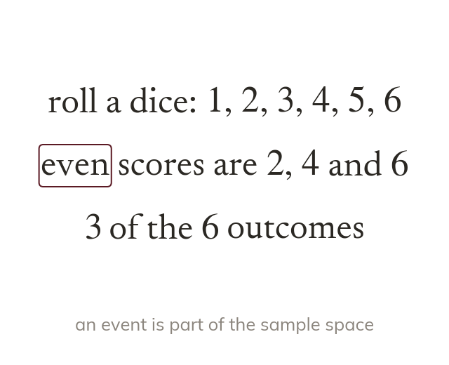
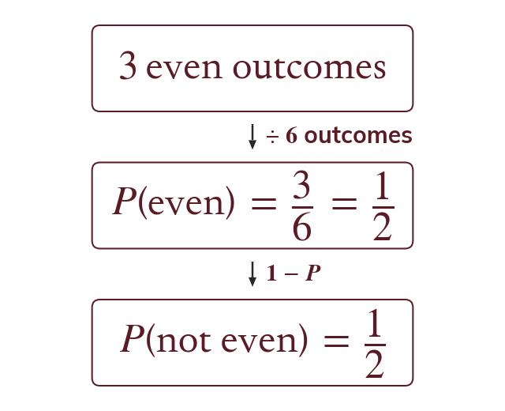
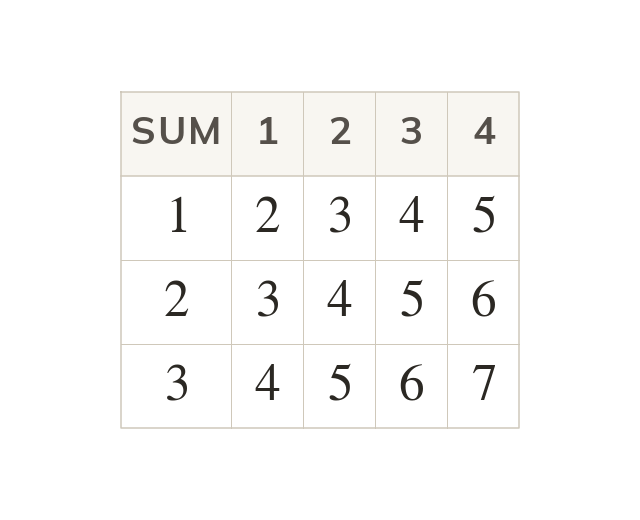
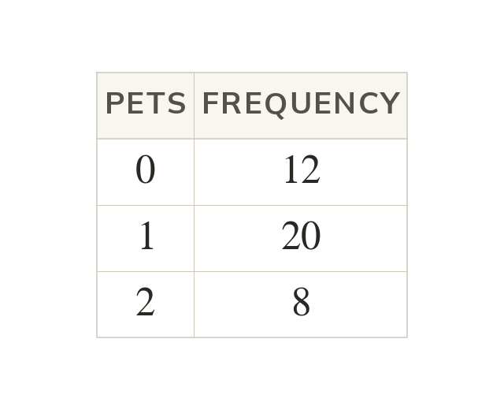
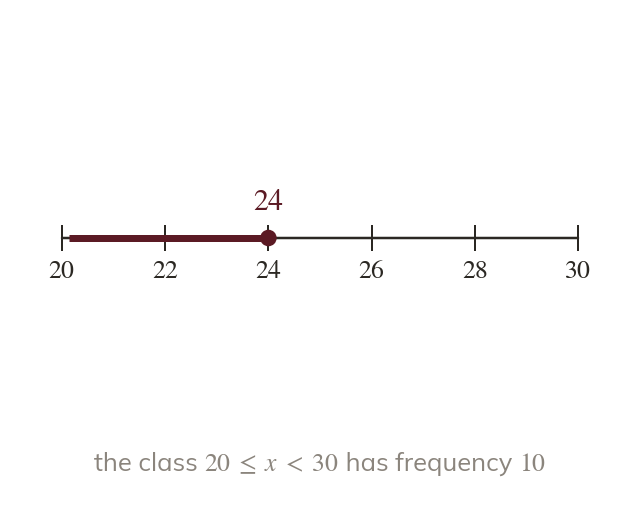
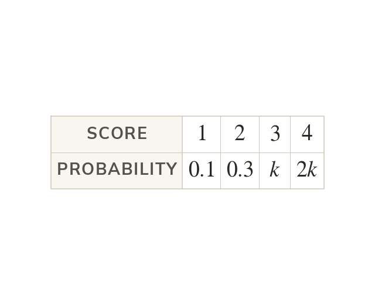
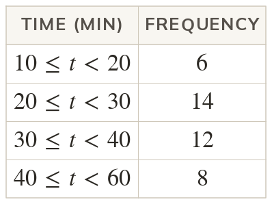

Outcomes and events
An experiment has outcomes, and the sample space is the set of all of them. An event is a collection of one or more outcomes.
Probability measures how likely an event is, on a scale from to and counting equally likely outcomes is where every later method starts. The next lessons draw the same events in Venn diagrams and tree diagrams.
Work down the page at your own pace. Write every answer in your book first, then click to check it.
Read each card, then follow the worked examples one step at a time.

An experiment has outcomes, and the sample space is the set of all of them. An event is a collection of one or more outcomes.

When every outcome is equally likely, divide the number in the event by the total number. The probabilities of all the outcomes add to so P(not )

A sample space diagram shows every pair of outcomes, so and are different outcomes. A spinner with sides and one with give outcomes.
Pick an answer. If it's wrong, the feedback tells you which mistake it was.
Write the blanks in your book first, then tap each one to check.
Read each card, then follow the worked examples one step at a time.

When one item is chosen at random from a table, divide its frequency by the total frequency. The fraction of the items in the event is its probability.

In a grouped table, assume the values are spread evenly through each class. Part of a class then counts in proportion, as interpolation does.

The probabilities of all the outcomes add to
Write that as an equation and solve it for the unknown.

Pick an answer. If it's wrong, the feedback tells you which mistake it was.
Write the blanks in your book first, then tap each one to check.
Finished? Next lesson: 12.S5.2 Venn Diagrams.
For each skill, tap the one that is true for you today. Your Revise pages start with anything you mark Not yet.
Your ratings are saved on this device only.
Log in, then search for a code to practise that skill.